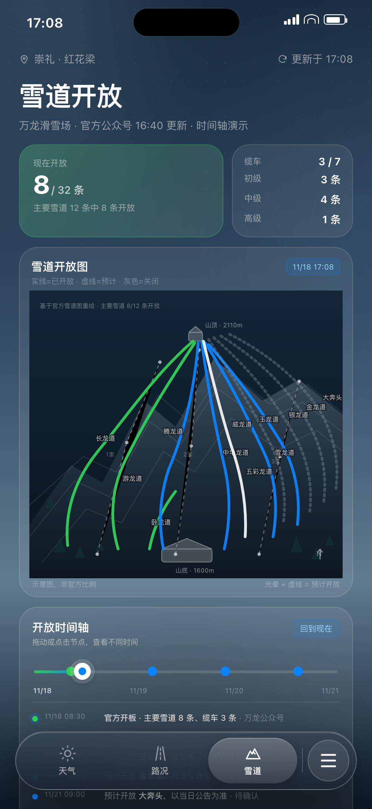
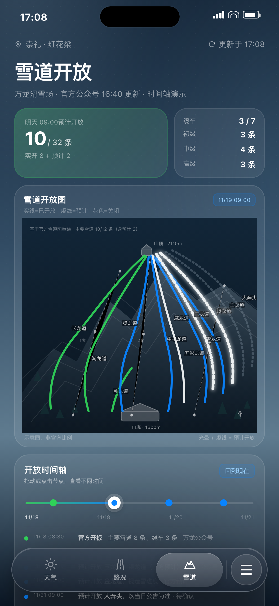
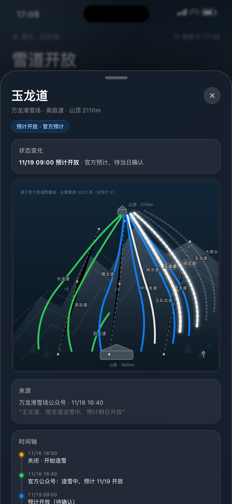
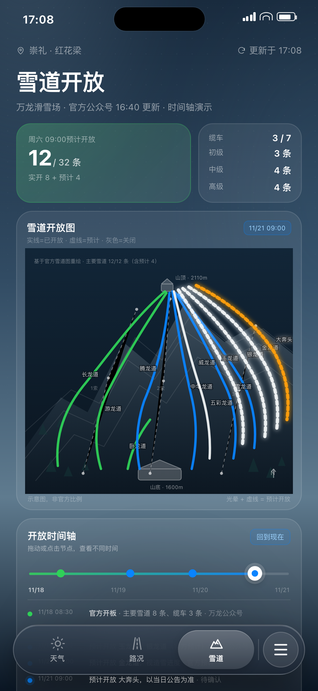

TRAIL MAP MODELING · TIME MACHINE
雪道真实图建模 + 时间轴
基于官方雪道图重绘 · 动态开放状态
雪道几何按官方图重绘，保留真实雪道名称/难度/位置关系
实线=已开放；虚线+光晕=预计开放；灰色=关闭
未来状态只展示官方预计，不冒充已开放

01 · 现在
8/32 已开放

02 · 11/19 09:00
实开 8 + 预计 2

03 · 单条雪道详情
玉龙道 · 预计开放

04 · 11/21 09:00
实开 8 + 预计 4
效果图中的雪道几何是“按官方图重绘”的演示；正式版必须获得雪场授权或使用可授权底图。雪道状态来自官方公众号人工/半自动整理，未来开放时间以当日官方公告为准。